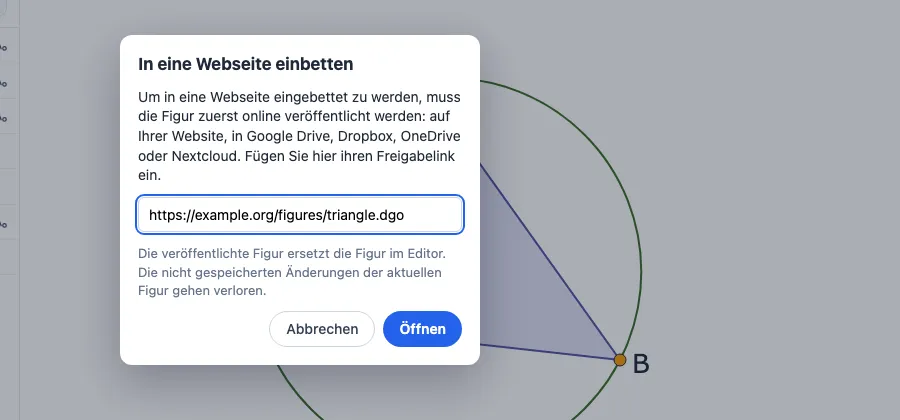
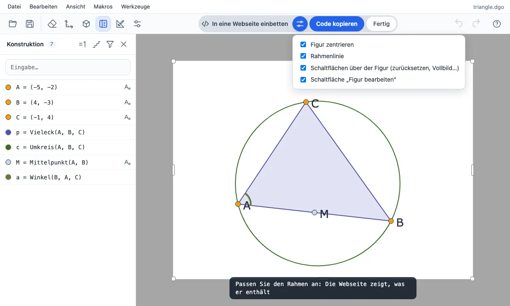

In eine Webseite einbetten
Eine DocGeo-Figur kann in jeder Webseite erscheinen — Ihrer Website, einem Moodle-Kurs, einem Blog — und dort wie in DocGeo bedient werden. Sie fügen nur einen Code, den der Editor vorbereitet, in den HTML-Code der Seite ein. Die Figur passt sich der Breite der Seite an, auch auf einem Telefon.
Das Prinzip
Die Seite enthält die Figur nicht: Bei jeder Anzeige liest sie die Figur dort, wo Sie sie online veröffentlicht haben. Daher:
- Die Figur muss zuerst online gestellt werden, wie um sie per Link zu teilen;
- um die Seite zu aktualisieren, ersetzen Sie nur die veröffentlichte Datei: Alle Seiten, die sie einbetten, zeigen sofort die neue Version, ohne dass ihr Code geändert wird.
Schritt für Schritt
-
Speichern Sie die Figur (Ctrl S) und
stellen Sie die
.dgo-Datei online: auf Ihre Website, in Google Drive, Dropbox, OneDrive oder Nextcloud. Kopieren Sie ihren Freigabelink. -
Wählen Sie
Datei › In eine Webseite einbetten…. Wurde
die Figur nicht über ihren Link geöffnet, fragt DocGeo
danach: Fügen Sie ihn ein und klicken Sie auf
Öffnen. Die veröffentlichte Figur ersetzt
dann die Figur im Editor; so ist sicher, dass der Code
funktioniert.

- Ein Rahmen erscheint über der Figur: Die Seite zeigt genau, was er enthält. Seine Griffe (Ecken und Seitenmitten) ändern seine Größe, seine Ränder und seine Beschriftung verschieben ihn. Zum Ausrichten können Sie auch zoomen, die Ansicht verschieben oder eine 3D-Figur drehen; die Figur bleibt bedienbar.
-
Stellen Sie bei Bedarf die Optionen ein, mit der
Schaltfläche links von Code kopieren.

- Klicken Sie auf Code kopieren und fügen Sie diesen Code in den HTML-Code Ihrer Seite ein.
- Fertig oder Esc entfernt den Rahmen.
Die Optionen
| Option | Wirkung |
|---|---|
| Figur zentrieren |
umgibt den Code mit <center>:
Die Figur wird in der Seite zentriert.
|
| Rahmenlinie | eine dünne graue Linie um die Figur. |
| Schaltflächen über der Figur | eine kleine Leiste oben rechts in der Figur, sichtbar, wenn die Maus darüber ist: die Figur zurücksetzen, im Vollbild zeigen. |
| Schaltfläche „Figur bearbeiten“ | fügt dieser Leiste eine Schaltfläche hinzu, die die Figur im Editor öffnet, in einem neuen Tab. Abwählen, zum Beispiel, damit Schülerinnen und Schüler die Konstruktion nicht sehen. |
Alle Optionen sind anfangs ausgewählt; Ihre Wahl bleibt erhalten, bis der Editor geschlossen wird.
Der einzufügende Code
Der kopierte Code sieht so aus:
<center><iframe
src="https://…/index.html?fit=704,512,…&url=https://…/triangle.dgo"
style="width:704px;max-width:100%;aspect-ratio:704/512;border:1px solid #ccc"
allow="fullscreen" loading="lazy"></iframe></center>
Um die Größe der Figur in der Seite zu ändern, ändern Sie nur
width, in Pixeln: Die Höhe folgt, und die Figur
behält die Proportionen des Rahmens. Auf einem schmaleren
Bildschirm, etwa dem eines Telefons, wird sie von selbst kleiner
(max-width:100%). Ändern Sie
aspect-ratio nur, um dem Platz der Figur eine
andere Form zu geben; die Figur bleibt darin ganz und zentriert.
Die Zahlen nach fit= beschreiben, was die Figur
zeigt, nicht ihre Größe: Ändern Sie sie nicht.
Fügen Sie den Code dort ein, wo die Seite HTML annimmt: in die
.html-Datei selbst, in einen WordPress-Block
„Individuelles HTML“ oder in den HTML-Modus (Quellcode) des
Texteditors von Moodle.
In der Seite
Die Figur wird dort wie in DocGeo bedient: Punkte, Schieberegler, Kontrollkästchen, Schaltflächen… Ziehen an einer leeren Stelle verschiebt die Ansicht oder dreht sie in 3D. Das Mausrad blättert die Seite, wie überall sonst; um die Figur zu zoomen, verwenden Sie Ctrl + Mausrad oder ziehen Sie auf dem Touchpad zwei Finger auseinander.
Ziehen Sie zwei Finger auseinander, um zu vergrößern, und zusammen, um zu verkleinern. Verschieben Sie beide Finger gemeinsam, um die Ansicht zu bewegen.
Die Schaltflächen oben rechts setzen die Figur zurück (so, wie die Seite sie geöffnet hat), zeigen sie im Vollbild und öffnen sie, wenn die Option ausgewählt ist, im Editor.

Eine eingebettete Figur aktualisieren
Öffnen Sie die Figur über ihren Link im Editor (zum Beispiel mit der Schaltfläche „Figur bearbeiten“ der Seite), ändern und speichern Sie sie und ersetzen Sie dann die veröffentlichte Datei am selben Ort, mit demselben Link: in Google Drive, indem Sie eine neue Version der Datei hochladen; in Dropbox, OneDrive oder Nextcloud, indem Sie die neue Datei unter demselben Namen in denselben Ordner legen. Alle Seiten, die die Figur einbetten, zeigen dann die neue Version, ohne dass ihr Code geändert wird.
Um nur den Ausschnitt zu ändern, wählen Sie erneut Datei › In eine Webseite einbetten… und kopieren Sie den neuen Code: Die veröffentlichte Datei muss sich nicht ändern.
Wurde die Figur im Editor geändert, seit sie über ihren Link geöffnet wurde, weist DocGeo darauf hin, bevor es den Rahmen zeigt: Solange die veröffentlichte Datei nicht ersetzt ist, zeigt die Seite die alte Version.
Wenn die Figur nicht erscheint
- Der Link muss öffentlich sein: Zugriff „Jeder, der über den Link verfügt“ in Google Drive, ein Link ohne Passwort in Nextcloud.
-
Manche Plattformen entfernen
<iframe>aus eingefügtem HTML oder lassen sie nur für bestimmte Websites oder Benutzer zu: Prüfen Sie die Einstellungen Ihrer Plattform. -
Ein Code, der aus einem auf Ihrem Computer installierten
DocGeo kopiert wurde (Adresse
localhost), funktioniert nur auf diesem: Kopieren Sie den Code aus dem Online-Editor. -
Die Vollbild-Schaltfläche erscheint nur, wenn das
<iframe>das Attributallow="fullscreen"hat, das der kopierte Code enthält.